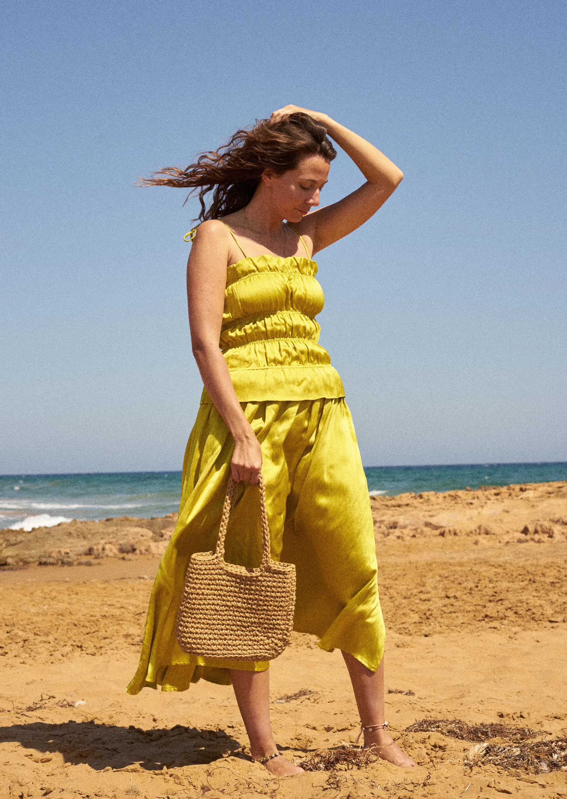
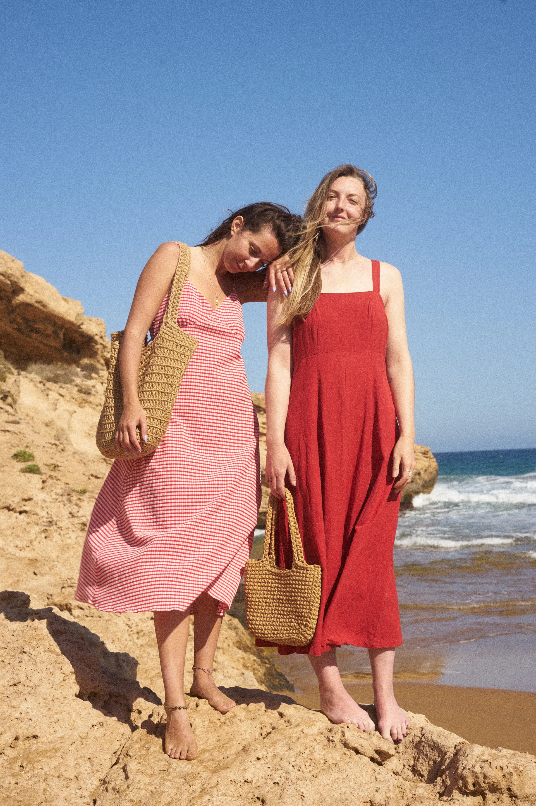
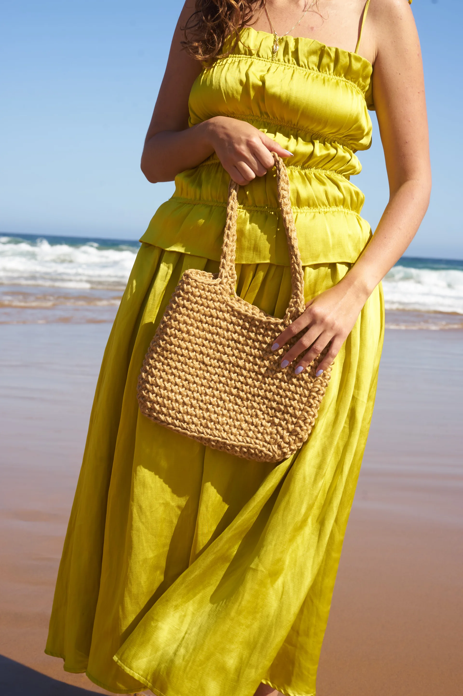
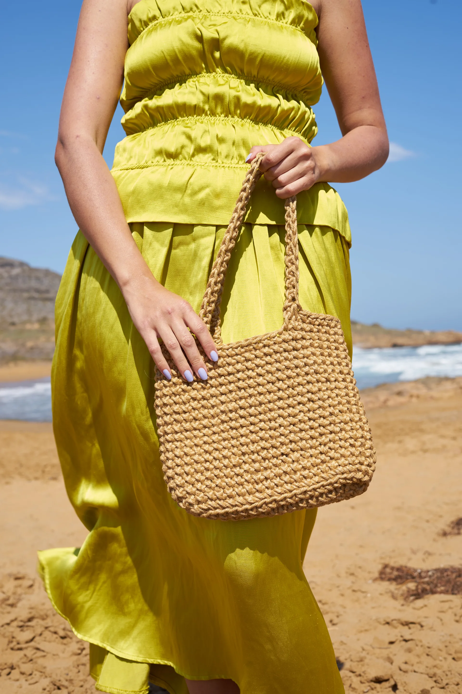
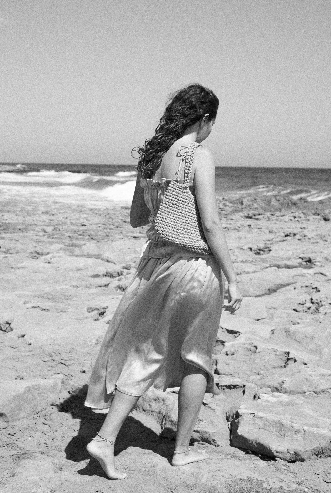
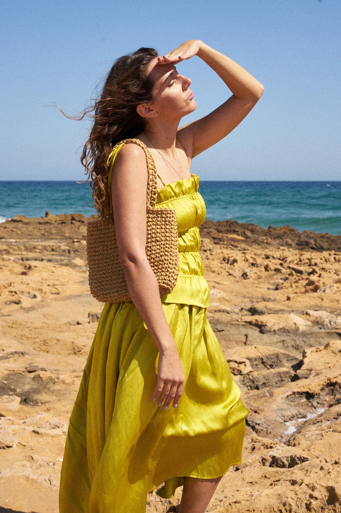
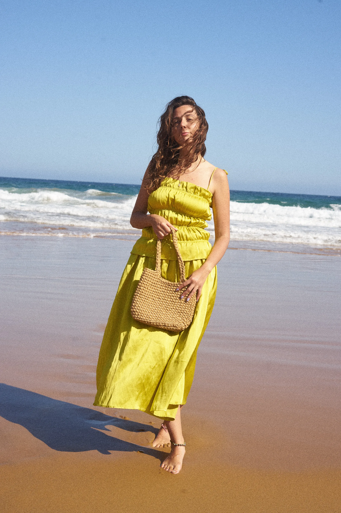
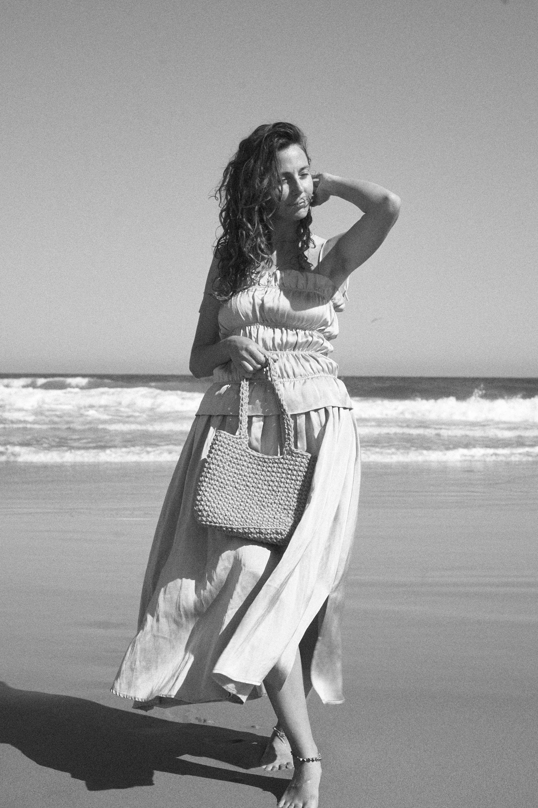
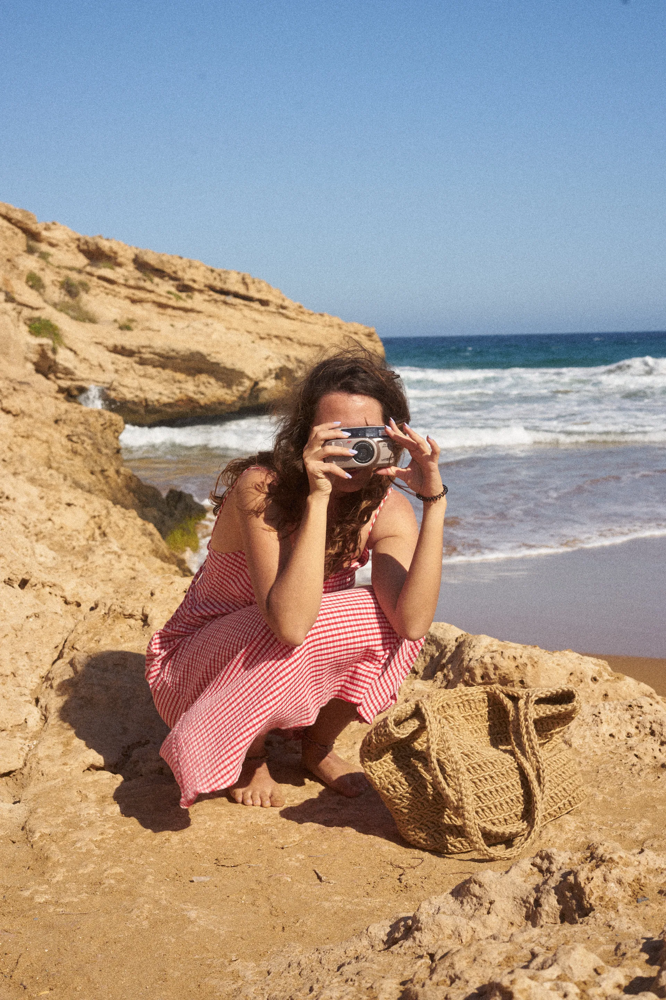

05
SALINA
Portrait and fashion work that lingers at the boundary between the composed and the candid. Each frame is a negotiation — between the subject's presence and the lens's hunger to pin it down.







